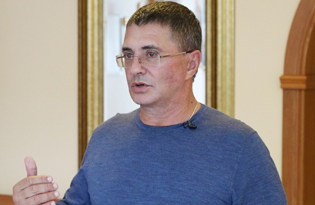

Доктор Мясников не видит особого смысла в ношении масок
Он также выступил против использования перчаток для защиты от COVID-19.«Коронавирус — это не клещ, он в кожу не впивается и не переносится руками», — заявил врач.Согласны ли с мнением коллеги другие медики?
Десятки лет использования масок при гриппе и других инфекциях показали низкую эффективность этого способа защиты, сказал врач и телеведущий Александр Мясников в эфире «Национальной службы новостей».
«От бессилия перед коронавирусом даже противники масок выступили за их ношение.Но если все снимут маски, ничего особенного не произойдет», — заявил Мясников.Он также выступил против ношения перчаток для защиты от COVID-19.«Коронавирус — это не клещ, он в кожу не впивается и не переносится руками», — пояснил врач.
Руководитель лаборатории клеточных технологий Института общей генетики имени Вавилова РАН Сергей Киселев с мнением Александра Мясникова согласен лишь частично.
«Обычные маски в два-три раза снижают вероятность переноса вируса.Они не являются никаким абсолютным изоляционным материалом, гарантирующим отсутствие инфекции.Так же как и мытье рук и соблюдение дистанции.Все это только снижает вероятность передачи инфекции.На мой взгляд, если мы сравниваем перчатки и маски — разумность, целесообразность, соотношение цены и пользы, перчатки совершенно бессмысленны, может быть, даже вредны, потому что они за целый день на себе столько накапливают, особенно у продавцов и кассиров, что уже становятся распространителями.Маски все-таки до определенной степени служат защитными средствами.Другое дело — грамотное использование масок.Но население в основном в отношении масок, конечно же, безграмотно, поскольку одна и та же маска носится несколько дней.Более того, я уверен, эти маски надеваются то одной стороной к лицу, то другой.И если говорить в итоге, насколько они в эту пандемию сыграли хоть какую-то положительную роль, то можно согласиться с Мясниковым, что, наверное, ношение масок и перчаток в ограничении и уменьшении распространения пандемии, может быть, никакой роли и не сыграло».
Профессор кафедры вирусологии биологического факультета МГУ Алексей Аграновский также считает, что перчатки от ковида не защитят, но маски носить нужно.
«Перчатки действительно малоэффективны для таких инфекций.Этот режим ввели, очевидно, следуя тем мерам, которые были внедрены в других странах от отчаяния.Я считаю, что маски все-таки достаточно эффективны в случае острых респираторных инфекций.Маски защищают других от вас, потому что вы не знаете точно, являетесь ли вы носителем этой инфекции.Так что я не согласился бы с уважаемым коллегой.Врачи делают операции в масках и в респираторах, нас это не удивляет, правда же?Они просто не хотят и не должны занести инфекцию в открытые раны».
В мае 2020 года СМИ писали, что власти Москвы приобрели крупнейшего производителя медицинских масок в России компанию «КИТ».В октябре Минпромторг заявил, что Россия нарастила объемы отечественного производства медицинских масок до 19,5 млн единиц в сутки.
Posted On: 2021-02-03T10:01:00
Posted By: Business FM



Content Date: 2021-02-03
Download Date: 2021-04-21
Document ID: L0C04ANV7